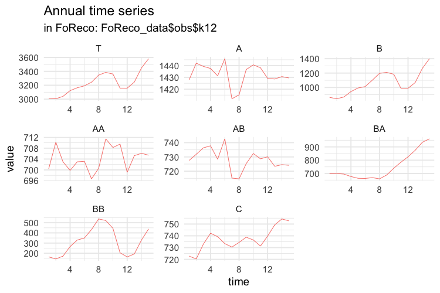
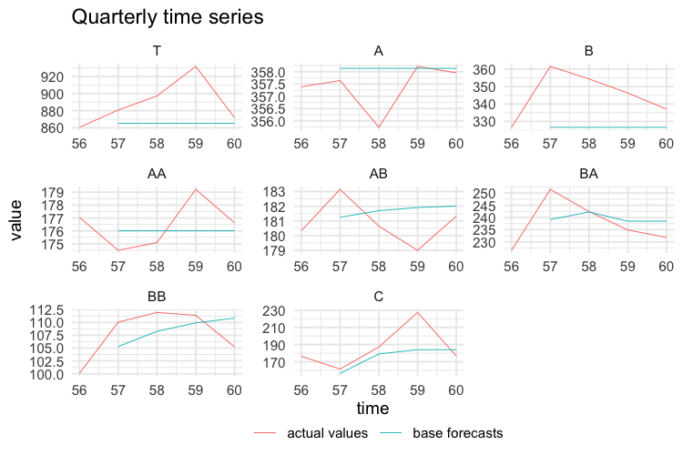
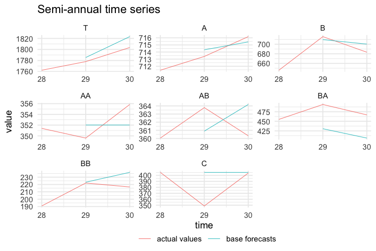

Using the FoReco package for
cross-sectional, temporal and cross-temporal point forecast
reconciliation
Daniele Girolimetto
2023-05-16
Source:vignettes/FoReco_package.Rmd
FoReco_package.RmdThe FoReco (Forecast Reconciliation) package is designed for forecast reconciliation, a post-forecasting process aimed to improve the quality of the base forecasts for a system of linearly constrained (e.g. hierarchical/grouped) time series.
It offers classical (bottom-up and top-down), and modern (optimal and heuristic combination) forecast reconciliation procedures for cross-sectional, temporal, and cross-temporal linearly constrained time series.
What are the most important functions?
The main functions are:
-
htsrec(): cross-sectional (contemporaneous) forecast reconciliation. -
thfrec(): forecast reconciliation for a single time series through temporal hierarchies. -
lccrec(): level conditional forecast reconciliation for genuine hierarchical/grouped time series. -
tdrec(): top-down (cross-sectional, temporal, cross-temporal) forecast reconciliation for genuine hierarchical/grouped time series. -
ctbu(): bottom-up cross-temporal forecast reconciliation. -
tcsrec(): heuristic first-temporal-then-cross-sectional cross-temporal forecast reconciliation. -
cstrec(): heuristic first-cross-sectional-then-temporal cross-temporal forecast reconciliation. -
iterec(): heuristic iterative cross-temporal forecast reconciliation. -
octrec(): optimal combination cross-temporal forecast reconciliation.
Installation
You can install the stable version on R CRAN.
install.packages('FoReco', dependencies = TRUE)You can also install the development version from Github
# install.packages("devtools")
devtools::install_github("daniGiro/FoReco")Example: cross-temporal data
A two-level hierarchy with \(n = 8\) monthly time series. In the cross-sectional framework, at any time it is \(Tot = A + B + C\), \(A = AA + AB\) and \(B = BA + BB\) (\(nb = 5\) at the bottom level). For monthly data, the observations are aggregated to annual \((k = 12)\), semi-annual \((k = 6)\), four-monthly \((k = 4)\), quarterly \((k = 3)\), and bi-monthly \((k = 2)\) observations. The monthly bottom time series are simulated from five different SARIMA models. There are 180 monthly observations (15 years): the first 168 values (14 years) are used as training set, and the last 12 form the test set.
Cross-sectional hierarchy
Simulation
In the following script we simulate five independent monthly bottom time series, each of length 180 (15 complete years of monthly data).
library(FoReco)
library(forecast)
library(sarima)
values <- NULL
base <- NULL
residuals <- NULL
test <- NULL
bottom <- matrix(NA, nrow = 180, ncol = 5)
# Model definition
bts <- list()
#ARIMA(1,0,0)(0,0,0)[12]
bts[[1]] <- list(ar=0.31,
nseasons=12)
#ARIMA(0,0,1)(0,0,0)[12]
bts[[2]] <- list(ma=0.61,
nseasons=12)
#ARIMA(0,1,1)(0,1,1)[12]
bts[[3]] <- list(ma=-0.1,
sma=-0.12,
iorder=1,
siorder=1,
nseasons=12)
#ARIMA(2,1,0)(0,0,0)[12]
bts[[4]] <- list(ar=c(0.38,0.25),
iorder=1,
nseasons=12)
#ARIMA(2,0,0)(0,1,1)[12]
bts[[5]] <- list(ar=c(0.30,0.12),
sma=0.23,
siorder=1,
nseasons=12)
mm <- c(58.85, 60.68, 59.26, 35.47, 58.61)
set.seed(525)
for(i in 1:5){
bottom[,i] <- mm[i] + sim_sarima(n=180, model = bts[[i]],
n.start = 200)
}
colnames(bottom) <- c("AA", "AB", "BA", "BB", "C")
C <- matrix(c(rep(1,5),
rep(1,2), rep(0,3),
rep(0,2), rep(1,2), 0), byrow = TRUE, nrow = 3)
upper <- bottom%*%t(C)
colnames(upper) <- c("T", "A", "B")
values$k1 <- ts(cbind(upper, bottom), frequency = 12)
colnames(values$k1) <- c("T", "A", "B", "AA", "AB", "BA", "BB", "C")More precisely, AA is simulated from an AR(1) process, AB from an MA(1), BA from an ARIMA(0,1,1)(0,1,1), BB from an ARIMA(2,1,0), and C from an ARIMA(2,0,0)(0,1,1). The higher levels series in the hierarchy (T,A,B) are obtained by simple summation of the five bottom time series.

Then we compute the temporally aggregated series at annual \((k = 12)\), semi-annual \((k = 6)\), four-monthly \((k = 4)\), quarterly \((k = 3)\), and bi-monthly \((k = 2)\) frequencies.
# BI-MONTHLY SERIES
values$k2 <- ts(apply(values$k1, 2,
function(x) colSums(matrix(x, nrow = 2))),
frequency = 6)
# QUARTERLY SERIES
values$k3 <- ts(apply(values$k1, 2,
function(x) colSums(matrix(x, nrow = 3))),
frequency = 4)
# FOUR-MONTHLY SERIES
values$k4 <- ts(apply(values$k1, 2,
function(x) colSums(matrix(x, nrow = 4))),
frequency = 3)
# SEMI-ANNUAL SERIES
values$k6 <- ts(apply(values$k1, 2,
function(x) colSums(matrix(x, nrow = 6))),
frequency = 2)
# ANNUAL SERIES
values$k12 <- ts(apply(values$k1, 2,
function(x) colSums(matrix(x, nrow = 12))),
frequency = 1)
The first 14 years of each simulated series are used as training set,
and the last year as test set. The forecasts are obtained using the
auto.arima function of the forecast package
(Hyndman et al., 2020).
# MONTHLY FORECASTS
base$k1 <- matrix(NA, nrow = 12, ncol = ncol(values$k1))
residuals$k1 <- matrix(NA, nrow = 168, ncol = ncol(values$k1))
for (i in 1:ncol(values$k1)) {
train <- values$k1[1:168, i]
forecast_arima <- forecast(auto.arima(train), h = 12)
base$k1[, i] <- forecast_arima$mean
residuals$k1[, i] <- forecast_arima$residuals
}
base$k1 <- ts(base$k1, frequency = 12, start = c(15, 1))
colnames(base$k1) <- c("T", "A", "B", "AA", "AB", "BA", "BB", "C")
residuals$k1 <- ts(residuals$k1, frequency = 12)
colnames(residuals$k1) <- c("T", "A", "B", "AA", "AB", "BA", "BB", "C")
test$k1 <- values$k1[-c(1:168), ]The following plots show the actual values and the forecasts for the test year at any temporal aggregation level.

# BI-MONTHLY FORECASTS
base$k2 <- matrix(NA, nrow = 6, ncol = ncol(values$k2))
residuals$k2 <- matrix(NA, nrow = 84, ncol = ncol(values$k2))
for (i in 1:ncol(values$k2)) {
train <- values$k2[1:84, i]
forecast_arima <- forecast(auto.arima(train), h = 6)
base$k2[, i] <- forecast_arima$mean
residuals$k2[, i] <- forecast_arima$residuals
}
base$k2 <- ts(base$k2, frequency = 6, start = c(15, 1))
colnames(base$k2) <- c("T", "A", "B", "AA", "AB", "BA", "BB", "C")
residuals$k2 <- ts(residuals$k2, frequency = 6)
colnames(residuals$k2) <- c("T", "A", "B", "AA", "AB", "BA", "BB", "C")
test$k2 <- values$k2[-c(1:84), ]
# QUARTERLY FORECASTS
base$k3 <- matrix(NA, nrow = 4, ncol = ncol(values$k3))
residuals$k3 <- matrix(NA, nrow = 56, ncol = ncol(values$k3))
for (i in 1:ncol(values$k3)) {
train <- values$k3[1:56, i]
forecast_arima <- forecast(auto.arima(train), h = 4)
base$k3[, i] <- forecast_arima$mean
residuals$k3[, i] <- forecast_arima$residuals
}
base$k3 <- ts(base$k3, frequency = 4, start = c(15, 1))
colnames(base$k3) <- c("T", "A", "B", "AA", "AB", "BA", "BB", "C")
residuals$k3 <- ts(residuals$k3, frequency = 4)
colnames(residuals$k3) <- c("T", "A", "B", "AA", "AB", "BA", "BB", "C")
test$k3 <- values$k3[-c(1:56), ]
# FOUR-MONTHLY FORECASTS
base$k4 <- matrix(NA, nrow = 3, ncol = ncol(values$k4))
residuals$k4 <- matrix(NA, nrow = 42, ncol = ncol(values$k4))
for (i in 1:ncol(values$k4)) {
train <- values$k4[1:42, i]
forecast_arima <- forecast(auto.arima(train), h = 3)
base$k4[, i] <- forecast_arima$mean
residuals$k4[, i] <- forecast_arima$residuals
}
base$k4 <- ts(base$k4, frequency = 3, start = c(15, 1))
colnames(base$k4) <- c("T", "A", "B", "AA", "AB", "BA", "BB", "C")
residuals$k4 <- ts(residuals$k4, frequency = 3)
colnames(residuals$k4) <- c("T", "A", "B", "AA", "AB", "BA", "BB", "C")
test$k4 <- values$k4[-c(1:42), ]
# SEMI-ANNUAL FORECASTS
base$k6 <- matrix(NA, nrow = 2, ncol = ncol(values$k6))
residuals$k6 <- matrix(NA, nrow = 28, ncol = ncol(values$k6))
for (i in 1:ncol(values$k6)) {
train <- values$k6[1:28, i]
forecast_arima <- forecast(auto.arima(train), h = 2)
base$k6[, i] <- forecast_arima$mean
residuals$k6[, i] <- forecast_arima$residuals
}
base$k6 <- ts(base$k6, frequency = 2, start = c(15, 1))
colnames(base$k6) <- c("T", "A", "B", "AA", "AB", "BA", "BB", "C")
residuals$k6 <- ts(residuals$k6, frequency = 2)
colnames(residuals$k6) <- c("T", "A", "B", "AA", "AB", "BA", "BB", "C")
test$k6 <- values$k6[-c(1:28), ]
# ANNUAL FORECASTS
base$k12 <- matrix(NA, nrow = 1, ncol = ncol(values$k12))
residuals$k12 <- matrix(NA, nrow = 14, ncol = ncol(values$k12))
for (i in 1:ncol(values$k12)) {
train <- values$k12[1:14, i]
forecast_arima <- forecast(auto.arima(train), h = 1)
base$k12[, i] <- forecast_arima$mean
residuals$k12[, i] <- forecast_arima$residuals
}
base$k12 <- ts(base$k12, frequency = 1, start = c(15, 1))
colnames(base$k12) <- c("T", "A", "B", "AA", "AB", "BA", "BB", "C")
residuals$k12 <- ts(residuals$k12, frequency = 1)
colnames(residuals$k12) <- c("T", "A", "B", "AA", "AB", "BA", "BB", "C")
test$k12 <- values$k12[-c(1:14), ]
base <- t(do.call(rbind, rev(base)))
res <- t(do.call(rbind, rev(residuals)))
test <- t(do.call(rbind, rev(test)))
kset <- c(12, 6, 4, 3, 2, 1)
h <- 1
colnames(base) <- paste("k", rep(kset, h * rev(kset)), "_h",
do.call("c", as.list(sapply(
rev(kset) * h,
function(x) seq(1:x)))),
sep = "")
colnames(test) <- paste("k", rep(kset, h * rev(kset)), "_h",
do.call("c", as.list(sapply(
rev(kset) * h,
function(x) seq(1:x)))),
sep = "")
h <- 14
colnames(res) <- paste("k", rep(kset, h * rev(kset)), "_h",
do.call("c", as.list(sapply(
rev(kset) * h,
function(x) seq(1:x)))),
sep = "")
colnames(C) <- c("AA", "AB", "BA", "BB", "C")
rownames(C) <- c("Tot", "A", "B")
obs <- values
FoReco_data <- list(base = base,
test = test,
res = res,
C = C,
obs = obs)Reconciliation
- Cross-sectional reconciliation for all temporal aggregation levels (monthly, bi-monthly, …, annual) using MinT-shr (Wickramasuriya et al., 2019)
K <- c(1,2,3,4,6,12)
hts_recf_list <- NULL
for(i in 1:length(K)){
# base forecasts
id <- which(simplify2array(strsplit(colnames(FoReco_data$base),
split = "_"))[1, ] == paste("k", K[i], sep=""))
mbase <- t(FoReco_data$base[, id])
# residuals
id <- which(simplify2array(strsplit(colnames(FoReco_data$res),
split = "_"))[1, ] == "k1")
mres <- t(FoReco_data$res[, id])
hts_recf_list[[i]] <- htsrec(mbase, C = FoReco_data$C, comb = "shr",
res = mres, keep = "recf")
}
names(hts_recf_list) <- paste("k", K, sep="")
hts_recf <- t(do.call(rbind, hts_recf_list[rev(names(hts_recf_list))]))
colnames(hts_recf) <- paste("k",
rep(K, sapply(hts_recf_list[rev(names(hts_recf_list))], NROW)),
colnames(hts_recf), sep="")- Forecast reconciliation through temporal hierarchies for all time series using series-acov (Nystrup et al., 2020)
n <- NROW(FoReco_data$base)
thf_recf <- matrix(NA, n, NCOL(FoReco_data$base))
dimnames(thf_recf) <- dimnames(FoReco_data$base)
for(i in 1:n){
# ts base forecasts ([lowest_freq' ... highest_freq']')
tsbase <- FoReco_data$base[i, ]
# ts residuals ([lowest_freq' ... highest_freq']')
tsres <- FoReco_data$res[i, ]
thf_recf[i,] <- thfrec(tsbase, m = 12, comb = "acov",
res = tsres, keep = "recf")
}- Heuristic first-temporal-then-cross-sectional cross-temporal reconciliation using t-wls + cs-shr (Kourentzes and Athanasopoulos, 2019)
tcs_recf <- tcsrec(FoReco_data$base, m = 12, C = FoReco_data$C,
thf_comb = "wlsv", hts_comb = "shr",
res = FoReco_data$res)$recf- Heuristic first-cross-sectional-then-temporal cross-temporal reconciliation using t-acov + cs-shr (Di Fonzo and Girolimetto, 2020)
cst_recf <- cstrec(FoReco_data$base, m = 12, C = FoReco_data$C,
thf_comb = "acov", hts_comb = "shr",
res = FoReco_data$res)$recf- Iterative cross-temporal reconciliation (Di Fonzo and Girolimetto, 2020)
ite_recf <- iterec(FoReco_data$base,
m = 12, C = FoReco_data$C,
thf_comb = "acov", hts_comb = "shr",
res = FoReco_data$res, start_rec = "thf")$recf
#> --------------------------------------------------------------------------------
#> Iter # | Cross-sec. incoherence | Temporal incoherence |
#> thf: 0 | 159.89 | 187.63 |
#> thf: 1 | 60.11 | 38.77 |
#> thf: 2 | 18.60 | 7.73 |
#> thf: 3 | 1.61 | 9.91e-01 |
#> thf: 4 | 4.16e-01 | 2.07e-01 |
#> thf: 5 | 3.03e-02 | 2.00e-02 |
#> thf: 6 | 9.18e-03 | 5.31e-03 |
#> thf: 7 | 5.18e-04 | 1.98e-04 |
#> thf: 8 | 1.30e-04 | 6.45e-05 |
#> thf: Convergence (starting from thf) achieved at iteration number 9!
#> thf: Temporal incoherence 4.94e-06 < 1e-05 tolerance
#> --------------------------------------------------------------------------------
The above plot shows the convergence path of both cross-sectional and temporal discrepancies.
- Optimal cross-temporal reconciliation using bdshr (Di Fonzo and Girolimetto, 2020)
oct_recf <- octrec(FoReco_data$base, m = 12, C = FoReco_data$C,
comb = "bdshr", res = FoReco_data$res, keep = "recf")Monthly actual and forecasted values are shown in the following figure.

An evaluation of the quality of the reconciled forecasts can be
obtained by using appropriate accuracy indices (see
score_index()).
References
Di Fonzo, T., Girolimetto, D. (2021), Cross-temporal forecast reconciliation: Optimal combination method and heuristic alternatives, International Journal of Forecasting, in press.
Hyndman R, Athanasopoulos G, Bergmeir C, Caceres G, Chhay L, O’Hara-Wild M, Petropoulos F, Razbash S, Wang E, Yasmeen F (2020). forecast: Forecasting functions for time series and linear models . R package version 8.13, https://pkg.robjhyndman.com/forecast/.
Kourentzes, N., Athanasopoulos, G. (2019), Cross-temporal coherent forecasts for Australian tourism, Annals of Tourism Research, 75, 393-409.
Nystrup, P., Lindström, E., Pinson, P., Madsen, H. (2020), Temporal hierarchies with autocorrelation for load forecasting, European Journal of Operational Research, 280, 3, 876–888.
Wickramasuriya, S.L., Athanasopoulos, G., Hyndman, R.J. (2019), Optimal forecast reconciliation for hierarchical and grouped time series through trace minimization, Journal of the American Statistical Association, 114, 526, 804-819.